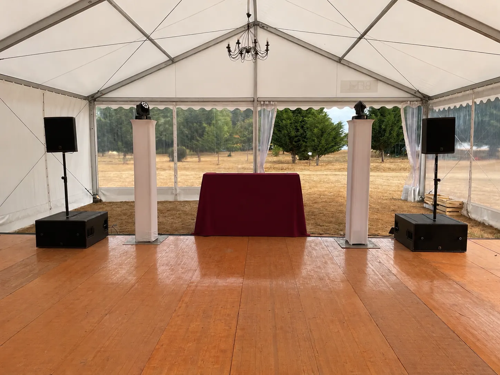
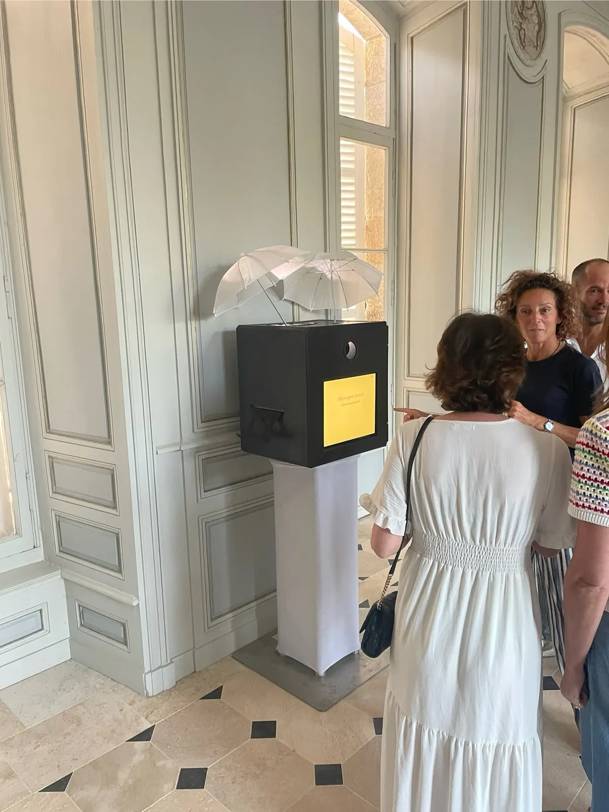
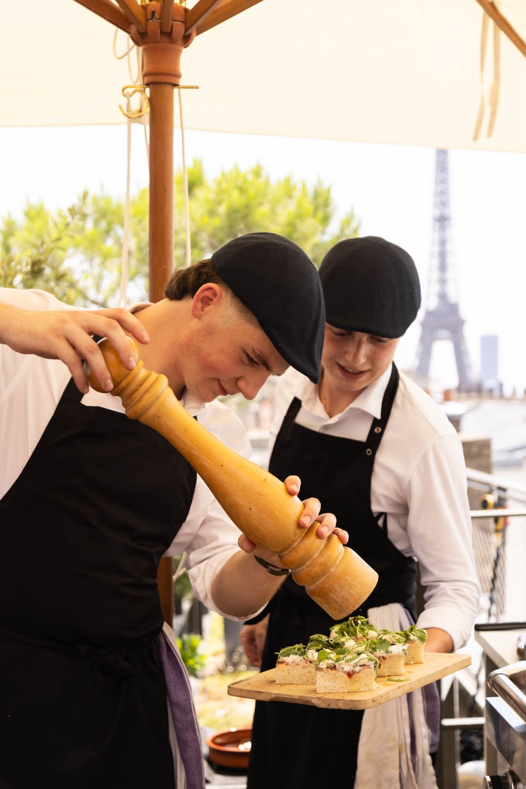
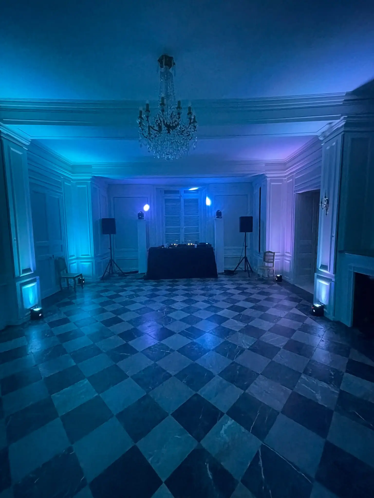

L'élégance se remarque. La technique, jamais.
Sonorisation, lumière, DJ, photographie et traiteur pour vos réceptions, soirées d'entreprise et mariages. Des installations soignées qui s'accordent à votre lieu, un matériel de référence, et un interlocuteur unique de la première rencontre au dernier morceau.
- +120événements animés
- 5 000invités sur notre plus grand événement
- +500vinyles dans notre bar à disques
- 24 hpour recevoir votre devis
Une maison née derrière les platines
Spectre Events a été fondée par Maxime et Andéol. Nous avons commencé comme DJs, dans des soirées privées, avant de rejoindre les mariages puis les événements d'entreprise. Au fil des prestations, les mêmes traiteurs, photographes et lieux de réception sont devenus des partenaires réguliers, et nos clients ont commencé à nous confier bien davantage que la musique.
Nous sommes partis d'un constat simple : un événement réussi se juge autant à ce que l'on voit qu'à ce que l'on entend. Une enceinte posée au hasard, un câble qui traverse la salle ou une régie mal habillée suffisent à abîmer un beau décor. Nous voulions des installations aussi soignées que les lieux qui les accueillent, et un son à la hauteur.
Le nom Spectre fait référence au spectre sonore, l'ensemble des fréquences que l'on équilibre pour obtenir un rendu juste. Il résume notre façon de travailler : une installation élégante, un son maîtrisé, une présence discrète.
Ce qui nous distingue
Des installations élégantes
Pieds et totems sobres, régie habillée, câbles rangés et dissimulés autant que le lieu le permet : l'installation s'accorde à votre salle au lieu de s'y imposer. Elle se fond dans le décor d'un château comme dans celui d'un showroom.
Un matériel de référence
Enceintes L-Acoustics, celles des salles de concert et des festivals, micros sans fil Shure, éclairages pilotés en direct. Ce matériel nous appartient et nous l'entretenons nous-mêmes : nous savons exactement ce qu'il peut donner et dans quel état il arrive chez vous.
Le sens de la solution
Une prise trop éloignée, une salle réaménagée la veille, un horaire qui glisse : chaque événement réserve sa part d'imprévus. Notre rôle est de les régler sans que vos invités s'en aperçoivent, avec du matériel de secours et une bonne dose de débrouillardise.
Une présence discrète
Tenue soignée, gestes mesurés, attention constante au déroulé : nous sommes là quand vous avez besoin de nous et invisibles le reste du temps. Vos invités retiennent l'ambiance, pas l'équipe technique.
Toutes les prestations, un seul nom
Son, lumière, DJ, borne photo, photographe, traiteur : nous réunissons l'ensemble avec des partenaires choisis pour leur sérieux. Vous gagnez du temps, et votre événement garde une cohérence du début à la fin.
Une attention de chaque instant
Un devis sous 24 heures, une réponse rapide à chaque question, des rendez-vous autant que nécessaire. Jeune maison, nous savons que notre réputation se construit événement après événement, et nous traitons chacun comme le plus important.
Nos prestations
Chaque prestation peut être réservée seule ou réunie avec les autres dans une organisation complète. Dans les deux cas, le même soin du détail et le même interlocuteur.

Sonorisation & DJ
Diffusion L-Acoustics, micros sans fil, mise en lumière et DJ, dans une installation discrète qui accompagne les discours comme la piste de danse.
Découvrir
Photographie
Une borne photo vintage aux impressions illimitées, ou un photographe pour garder la trace de chaque temps fort.
Découvrir
Traiteur
Avec notre partenaire Beret et Papilles : cocktails, dîners assis ou buffets, à partir de produits locaux et de saison.
Découvrir
Location de matériel
Sonorisation et éclairage à louer, de la petite enceinte pour un cocktail au système complet pour 400 personnes.
DécouvrirPour chaque moment de votre événement
Cocktails et réceptions
Lors d'un cocktail ou d'une réception, la parole compte autant que la musique. Nous installons des micros sans fil et une diffusion calibrée pour que chaque discours soit entendu jusqu'au fond de la salle. Entre deux prises de parole, la musique accompagne les échanges sans jamais les couvrir.
Discours & ambianceSoirées dansantes
Une piste de danse réussie se construit morceau après morceau. Nous lisons la salle et adaptons la sélection à votre public, pour que les invités de tous âges s'y retrouvent au fil de la soirée. Le son reste puissant sur la piste et confortable autour, pour que chacun profite à sa manière.
DJ & mise en lumièreÀ la carte ou clé en main
Certains clients nous confient uniquement la sonorisation ou le DJ, d'autres l'organisation complète de leur événement. Dans ce second cas, nous coordonnons pour vous le traiteur, le photographe et le lieu, avec des partenaires que nous connaissons bien. Le niveau d'exigence reste le même, quelle que soit l'ampleur de la mission.
Une prestation ou l'ensembleNos engagements
Un événement engage l'image de celui qui l'organise, qu'il s'agisse d'une entreprise ou d'une famille. Voici les principes que nous appliquons à chaque prestation, quelle que soit sa taille.
Un interlocuteur unique
Dès le premier échange, votre projet est suivi personnellement par l'un des fondateurs, qui reste votre contact jusqu'au soir de l'événement. Vous n'avez pas à répéter vos attentes à plusieurs personnes, ni à coordonner vous-même les différents prestataires. Une question ou un changement de dernière minute se règle en un seul appel.
Une préparation approfondie
Avant chaque événement, nous organisons plusieurs rendez-vous pour comprendre précisément vos attentes : déroulé de la soirée, horaires des prises de parole, ambiance souhaitée, contraintes du lieu. Lorsque c'est utile, nous visitons la salle en amont afin de prévoir l'implantation du matériel. Le jour venu, rien ne se décide dans l'urgence.
Une installation prête avant vos invités
Nous arrivons largement en avance pour installer, régler et vérifier chaque élément, et disposons toujours de matériel de secours. Celui qui assure la soirée est aussi celui qui a monté l'installation : il peut intervenir immédiatement si un réglage doit évoluer. Quand les premiers invités entrent, tout est en place depuis longtemps.
Une tarification transparente
Chaque devis détaille l'ensemble des postes, du matériel à la main-d'œuvre, afin que vous sachiez précisément ce que vous financez. Nous proposons un matériel haut de gamme à un tarif juste, sans les frais de structure d'une grande agence. Le devis est gratuit et vous parvient sous 24 heures.
Ils nous ont fait confiance
Plus de 120 événements animés depuis nos débuts, pour des entreprises comme pour des particuliers.
★★★★★ « Grâce à votre implication, cet événement a été un véritable succès ! »
★★★★★ « Merci encore pour cette superbe soirée, on a eu que des compliments sur la musique ! »
★★★★★ « C'était vraiment top, notre DJ a été excellent ! »
★★★★★ « DJ très sympathique et pro. Matériel de qualité. Bon rapport qualité prix. Je recommande ! »
Questions fréquentes
Combien coûte une prestation ?
Le tarif dépend du nombre d'invités, du lieu, de la durée de la soirée et des prestations retenues. Plutôt qu'une grille de prix générique, nous établissons pour chaque projet un devis détaillé poste par poste. Il est gratuit, sans engagement, et vous parvient sous 24 heures.
Pouvez-vous gérer tout l'événement ?
Oui. Nous pouvons intervenir pour une seule prestation, ou coordonner l'ensemble de la soirée avec les traiteurs, photographes et lieux de réception avec lesquels nous travaillons régulièrement. Dans les deux cas, vous conservez un interlocuteur unique.
Jusqu'à combien de personnes ?
Nous sonorisons aussi bien des cocktails d'une quarantaine de personnes que des soirées de grande ampleur : notre plus grand événement réunissait 5 000 personnes. Le matériel est dimensionné selon la salle et le nombre d'invités.
Où intervenez-vous ?
Nous intervenons principalement à Paris et en Île-de-France, ainsi qu'en Vendée et dans les Pays de la Loire. Pour un événement ailleurs en France, contactez-nous : nous étudions chaque demande.
Combien de temps à l'avance faut-il réserver ?
Les mois de décembre et les samedis de printemps et d'été sont très demandés : nous vous conseillons de nous contacter plusieurs mois à l'avance. Pour une date plus proche, contactez-nous directement, nous vous confirmerons rapidement nos disponibilités.
Parlons de votre prochain événement.
Indiquez-nous la date, le lieu et le nombre d'invités. Nous revenons vers vous pour échanger sur votre projet, et vous recevez un devis détaillé sous 24 heures.